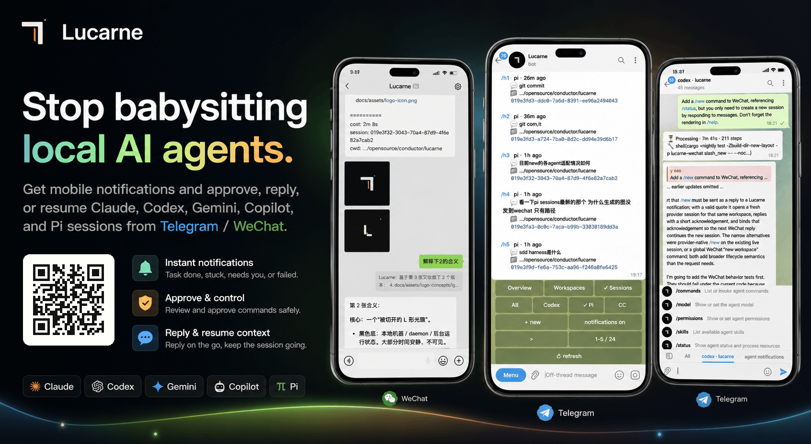

Lucarne：本地 AI Agent 的微信/Telegram 移动控制桥
Lucarne 不改你的 agent 工程，不加 hooks、skills 或 MCP；它把通知、审批、续接上下文和会话控制，接到手机上的微信 / Telegram 里。
01 / 核心判断
Lucarne 不是一个新聊天工具，而是把本地 AI agent 的“盯进度、批命令、接上下文”搬到移动端的事件桥。你依然在本机跑 Claude / Codex / Gemini / Copilot / Pi，只是把关键控制放到微信或 Telegram 里做。

这张海报在说什么
Stop babysitting local AI agents. 这是它的产品主张：不再守着电脑盯 agent，而是通过手机通知、审批和回复来接管关键节点。
适合谁：已经在本地跑 agent、但不想一直守着终端的人。
不适合谁：想把它当成通用 IM、或想完全替代 agent CLI 的人。
02 / 架构总览
核心链路
Lucarne 的结构不是“新 agent”，而是把现有本地 agent 的关键动作抽出来，经过一个轻量桥接层，送到微信 / Telegram 形成可移动的控制面。
为什么这个架构有效
它把“看守终端”改成“看守事件”，把控制动作从桌面 CLI 迁移到手机 IM，同时保持 agent 仍然在本机执行。
03 / Agent 能力矩阵
| Agent | 结构化审批 | AskUserQuestion | Resume | Fork | 适合场景 |
|---|---|---|---|---|---|
| Claude | 强 | 强 | 强 | 强 | 最完整的一档，适合高频审批和多轮续接。 |
| Codex | 强 | 强 | 强 | 强 | 代码任务和工程流转较顺，适合需要明确控制点的场景。 |
| Gemini | 强 | 强 | 强 | 中 | 适合多工具协作和跨步推进，控制体验完整。 |
| Copilot | 中 | 弱 | 弱 | 弱 | 轻量接入可用，但更偏基础通知和简单交互。 |
| Pi | 中 | 弱 | 中 | 中 | 基础可用，适合较简单的控制和续接需求。 |
Lucarne 并不是“适配所有 agent 的同质 UI”；它更像一个把不同 agent 的控制能力压成统一手机操作面的桥。
如果你最关心审批和 Resume，优先看 Claude / Codex / Gemini；如果只是想先把移动通知跑起来，Copilot / Pi 也够用。
04 / 入口与证据
使用顺序
1. 安装 lucarned；2. 跑 lucarned init 配好 agent 和入口 chat；3. 执行 lucarned autostart install --start；4. 在 Telegram / WeChat 中打开面板并接收通知。
最先试的不是新命令，而是先让“通知 → 审批 → 续接”这一条链跑通。